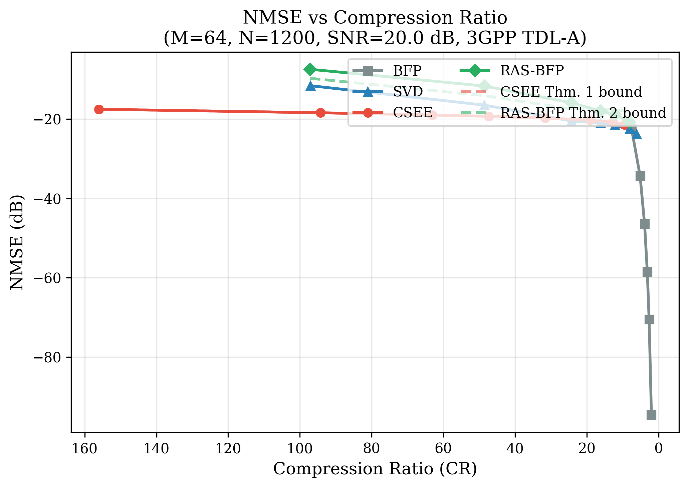
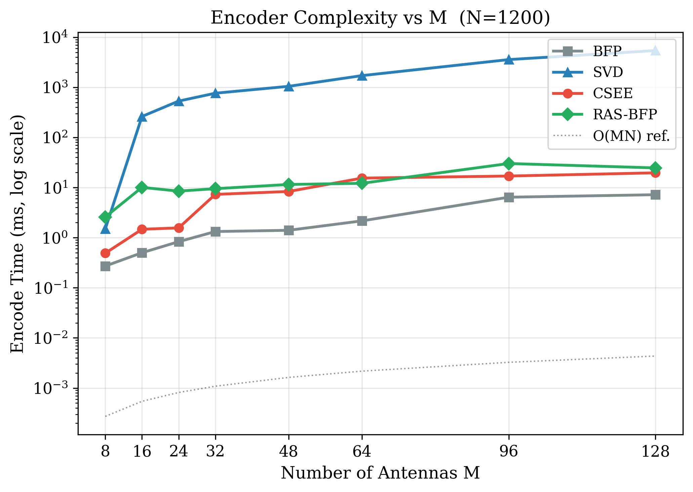
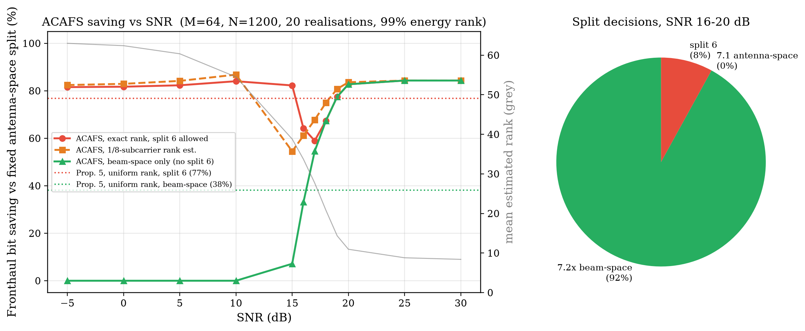
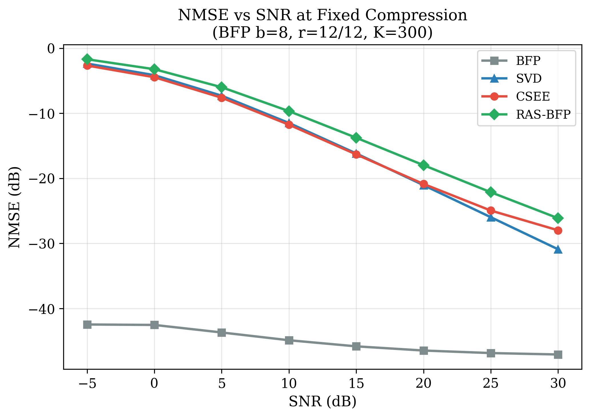

5G/6G C-RAN · IEEE TWC / JSAC track · September 2026
Raw I/Q per cell at M=64, 100 MHz, 32-bit samples
RU 3GPP TDL-A → Y ∈ ℂ^{M×N}
├─ CSEE: IFFT → top-K delay taps → BFP
└─ RAS-BFP: SRHT sketch → thin QR → BFP(L, Q)
│ compressed bitstream
DU ACAFS(rank rₖ) → Split 7.2x / 7.1 / 6
Decoder → Ŷ (bounded NMSE)
Shared block exponent + mantissa truncation. Complexity O(MN). Limited compression (~4×).
Best rank-r approximation (Eckart–Young). High CR, but O(MN·min(M,N)) runtime.
Exploit TDL-A delay sparsity: keep top-K IFFT taps, quantize, FFT back.
Complexity O(MN log N) — several× faster than SVD at matched operating points.
| Rank fraction | Selected split | Relative BW |
|---|---|---|
| r/M < 0.15 | Split 7.2x | 0.25 |
| 0.15 ≤ r/M < 0.55 | Split 7.1 | 0.45 |
| r/M ≥ 0.55 | Split 6 | 1.00 |
Uniform-rank analytical saving vs Split 6 ≈ 33%; SNR sweeps show ~30%+ mean.
| Parameter | Value |
|---|---|
| Channel | 3GPP TR 38.901 TDL-A, 100 ns RMS |
| Antennas / Subcarriers | M=64 · N=1200 |
| SNR range | −5 dB … +30 dB |
| Spatial model | Exponential correlation ρ=0.7 |




| Metric | BFP | SVD | CSEE | RAS-BFP |
|---|---|---|---|---|
| CR | ~3.9× | ~16× | ~12.7× / 63× | ~16× |
| NMSE @20 dB | ~−46 | ~−21 | ~−21 / −19 | ~−18 |
| Encode M=64 | ~3 ms | ~20–30 ms | ~5 ms | ~7 ms |
| Theory | Emp. | Trunc. | Thm 1 | Thm 2–4 |
C++ / AVX-512 / CUDA · target <100 µs encode
ACAFS as near-RT RIC E2 xApp
USRP N310 / OpenAirInterface OTA
IEEE TWC / JSAC camera-ready
Thank you — questions?